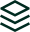

Bring instant liquidity to your tokenized fund
Talk to our team about integrating Nexus for your investors.
Nexus
Instant liquidity infrastructure for regulated issuers of tokenized funds.
How Nexus works
Nexus lets your tokenholders redeem into stablecoins in near-real time, while Ondo provides the liquidity behind the scenes.
01
A holder requests redemption of your tokenized fund.
02
Nexus provides instant liquidity and settles in stablecoins (e.g. USDC).
03
Ondo manages the resulting inventory and rebalances the liquidity buffer.
Why choose Nexus
Speed
Near-instant, 24/7 stablecoin redemptions for your tokenholders.
Trust
Institutional-grade infrastructure with security, transparency, and compliance.
Control
KYC/KYB, custody, disclosures, reporting, and operational guardrails.

Scale
A single path from token issuance to real tokenholder liquidity, without stitching together vendors.
Trusted by Institution Partners
Bring instant liquidity to your tokenized fund
Talk to our team about integrating Nexus for your investors.